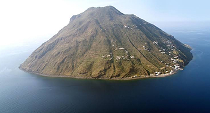

L'isola di Alicudi
L'isola più occidentale e isolata, caratterizzata da un'orografia scoscesa, assenza di veicoli e massima dipendenza logistica.
In questa pagina troverai:

Istruzione
La realtà scolastica è rappresentata da una delle pluriclassi più ridotte d'Italia, appartenente all'IC "Isole Eolie". Con pochissimi alunni dalla scuola dell'infanzia alla secondaria di primo grado, la continuità didattica affronta sfide strutturali estreme, mentre gli studi superiori impongono il definitivo allontanamento dal territorio insulare.
Approvigionamento e cibo
Priva di rete stradale e mezzi a motore, la movimentazione interna dei beni avviene a piedi o tramite muli. L'approvvigionamento alimentare dipende interamente dalla rotta commerciale Milazzo-Filicudi-Alicudi; l'isolamento prolungato per mare mosso riduce drasticamente le scorte, esponendo l'isola a vulnerabilità logistiche e costi di trasporto elevati.
Servizi essenziali
L'assistenza sanitaria di base è affidata alla Guardia Medica presidiata. L'assenza di farmacie dedicate e di presidi specialistici rende l'elisoccorso l'unico canale di emergenza per traumi o patologie acute, evidenziando il massimo livello di dipendenza istituzionale e territoriale verso il comune centrale di Lipari.
Fonti
Le analisi sulla vita residenziale eoliana si basano sui dati demografici ISTAT, sui report dell'Ufficio Scolastico Regionale e dell'IC Isole Eolie dedicati alle pluriclassi, sulle tabelle di continuità territoriale della Regione Siciliana e sui bollettini di navigazione di Liberty Lines e Siremar.